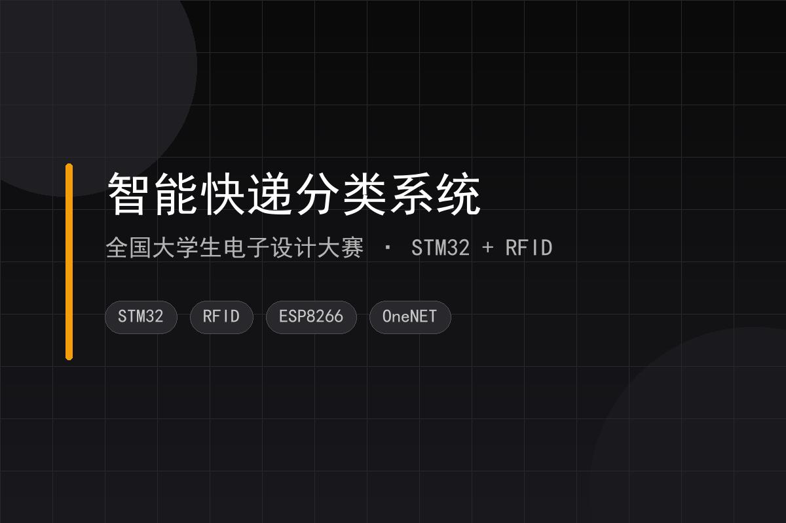
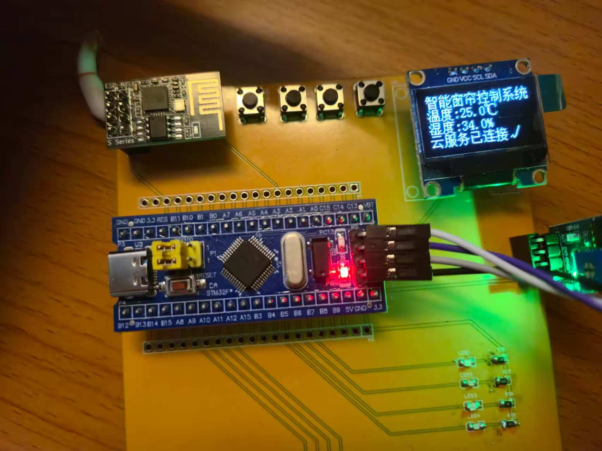
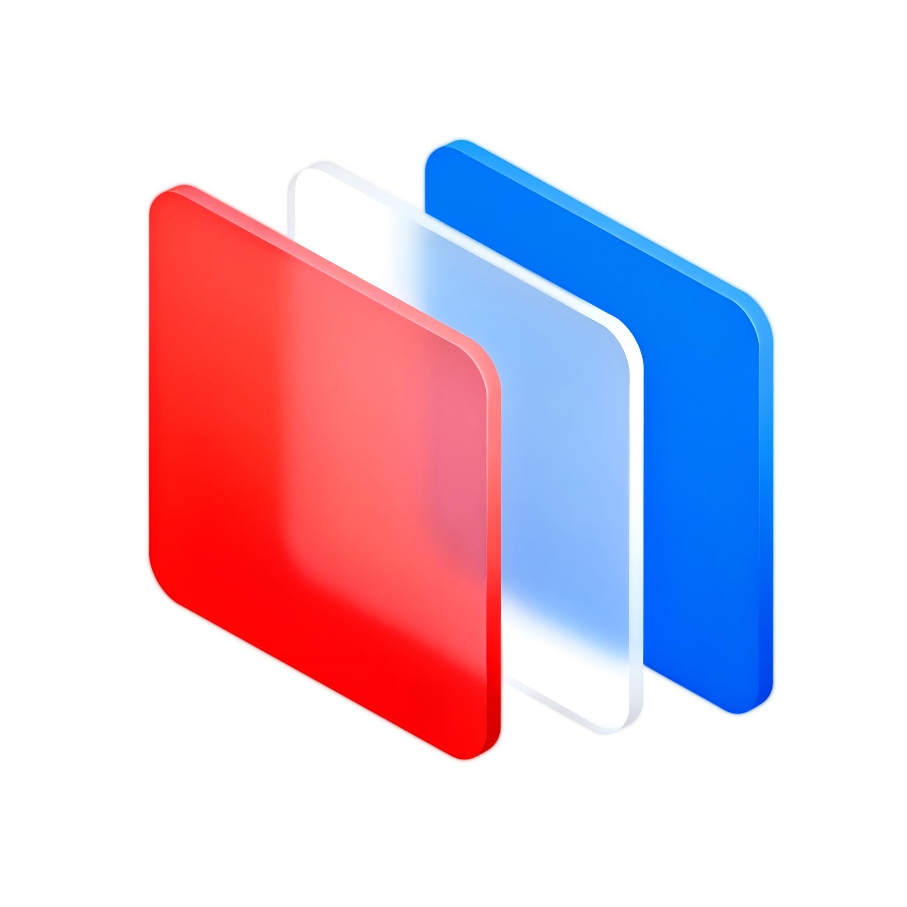
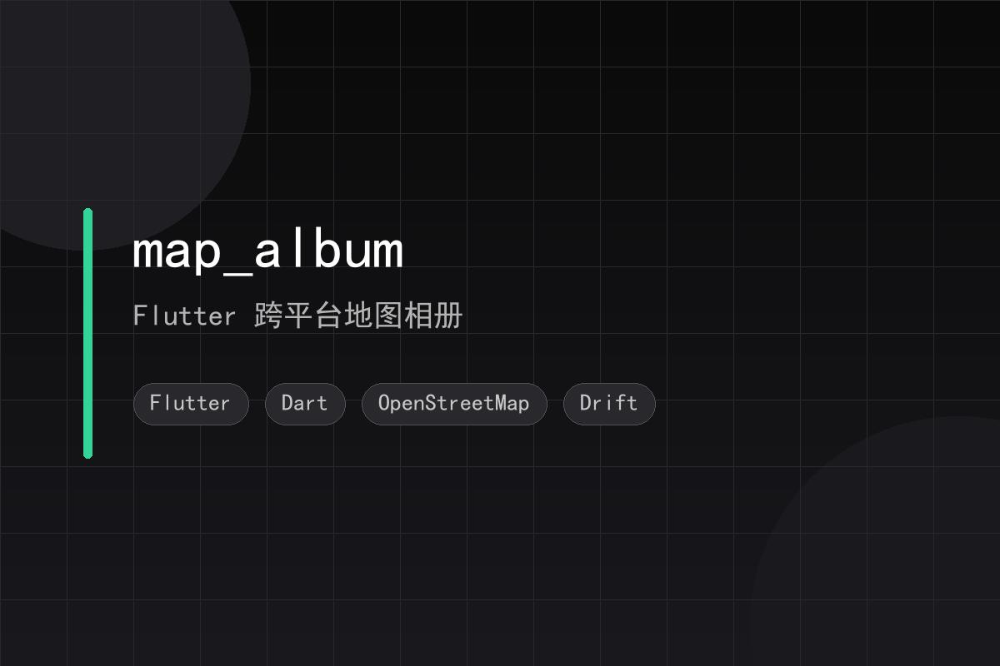
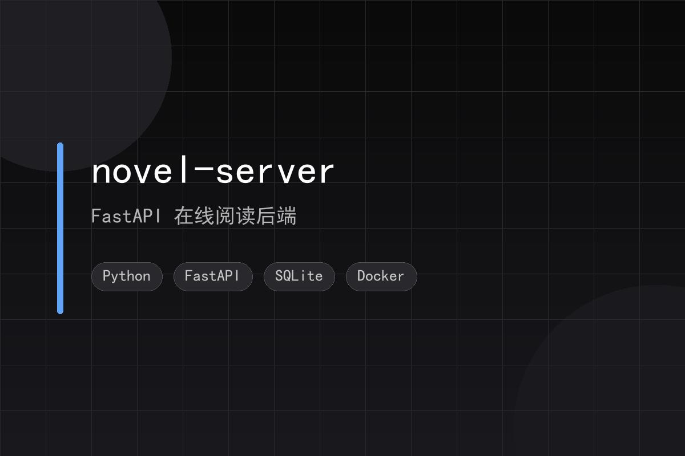
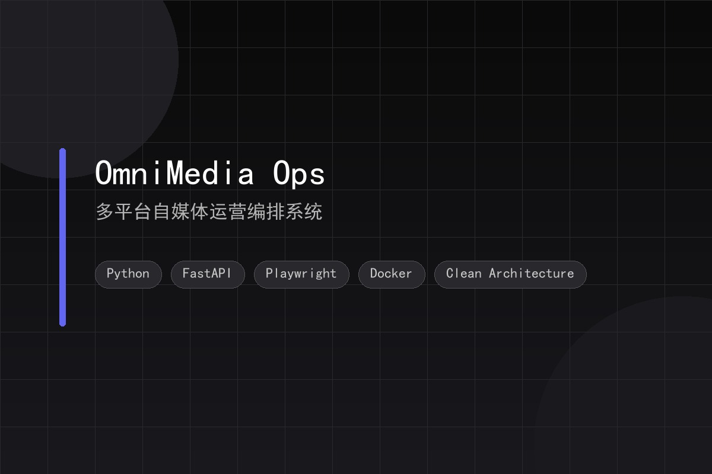

智能快递分类系统
全国大学生电子设计大赛基于 STM32 的快递分拣装置，集成 RFID 识别、称重模块、ESP8266 和 OLED 显示。实现快递识别、自动分类、称重与 OneNET 云端数据同步。
STM32RFIDESP8266
OneNET
查看详情
黄河交通学院物联网工程专业本科生。有 2 年校园 IT 运维经验，熟悉多媒体设备、机房管理、网络硬件维护和故障排查；能使用 AI 编程工具独立完成 STM32 嵌入式、Android / Flutter 移动应用 和 Python 后端项目。
About
在校期间，我同时做了两件事：校园 IT 运维助理和独立项目开发。
运维工作让我熟悉了机房、多媒体设备和网络硬件的维护；独立项目让我能完成从需求分析到代码实现、部署测试的完整流程。
排查硬件故障时养成的习惯——先看日志、再找根因——也影响了我的开发方式。遇到问题时，我倾向于先理解问题本质，再动手解决。
Education
Honors
Skills
覆盖运维、网络、嵌入式、移动开发和 AI 辅助工程
Projects
从嵌入式竞赛、毕业设计到移动应用和后端服务，覆盖完整工程链路

基于 STM32 的快递分拣装置，集成 RFID 识别、称重模块、ESP8266 和 OLED 显示。实现快递识别、自动分类、称重与 OneNET 云端数据同步。

以 STM32 为主控，通过 DHT11、光敏电阻采集环境数据，结合温度和光照阈值自动控制窗帘开合；通过 ESP8266 连接 OneNET MQTT，配合微信小程序实现远程控制。

基于 Kotlin 和 Jetpack Compose 的照片管理应用扩展版。新增腾讯地图、关系组、纪念日、回忆册和城市足迹等功能。

Flutter 跨平台相册应用，支持在 OpenStreetMap 上查看照片 GPS 标记、按地点和时间浏览、创建行程并回放路线。

基于 FastAPI 的小说/漫画阅读后端，支持 EPUB、TXT、ZIP/CBZ、RAR/CBR 多格式书籍自动扫描入库。

面向小红书、今日头条、抖音、微信等多平台的自媒体运营编排系统。覆盖热点聚合、AI 内容生成、审核治理、发布编排与指标复盘完整闭环。
Experience
2 年校园 IT 运维，覆盖多媒体教室、机房、校园活动和资产管理的完整链路
IT 运维助理
负责投影仪、中控、功放、音响、幕布日常巡检与故障排除；处理教师报修的电脑、投影、网络等问题。
完成系统重装、教学软件部署、网络故障处理和键鼠更换，保障日常教学及英语四六级考试顺利进行。
操作会议室多媒体设备、音响调试、LED 大屏与投影切换，为校级会议、招聘会、讲座提供现场保障。
协助全校 IT 设备资产盘点、标签管理与报废登记；建立设备故障台账，记录型号、更换记录与历史故障。